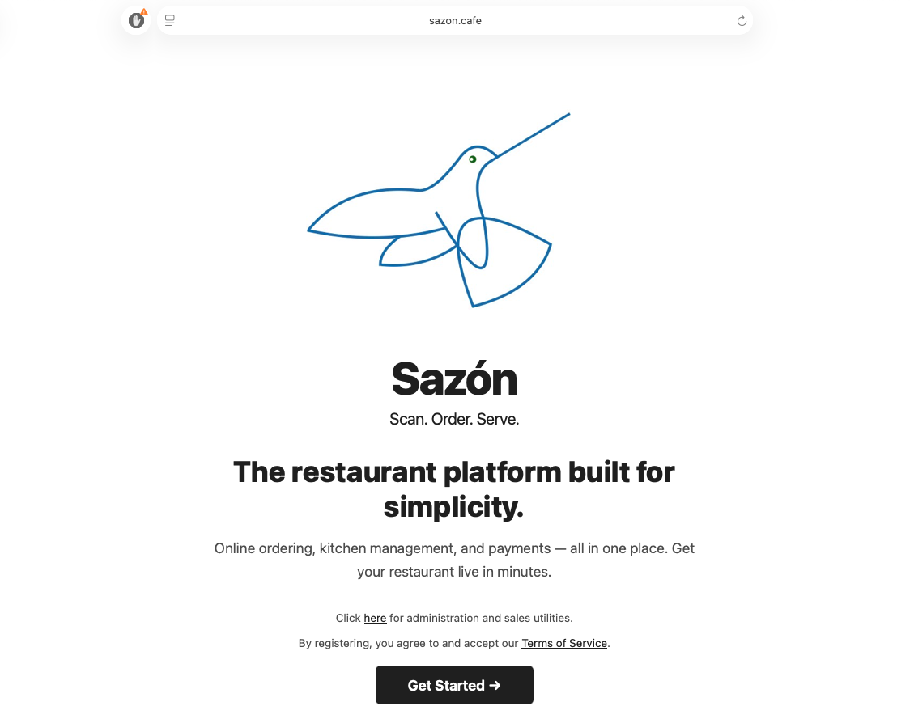
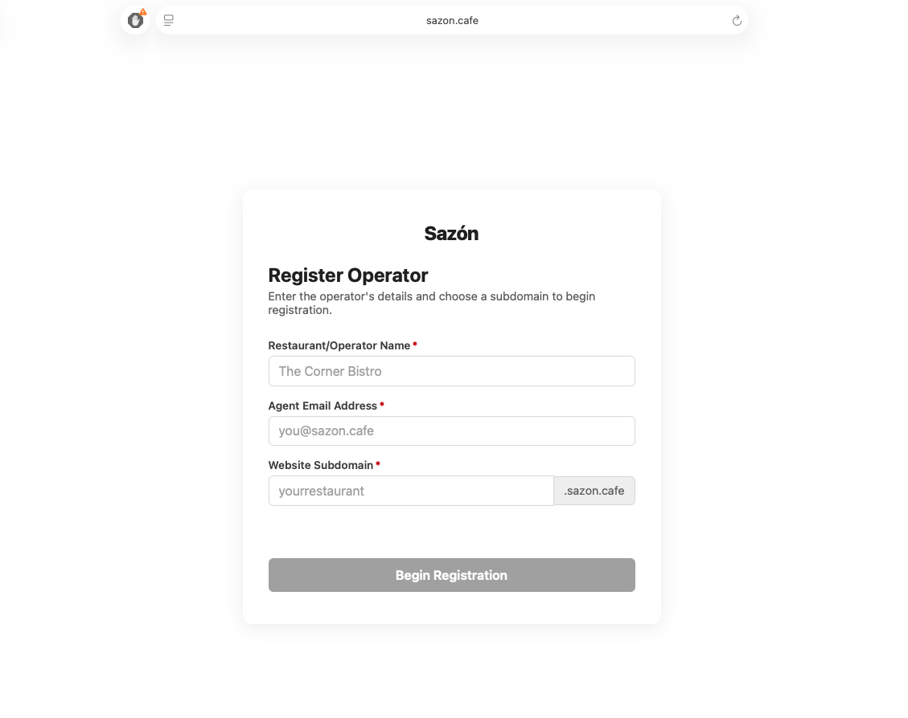

Start at Sazón
Open the public landing page and select Get Started.
Independent agent guide
Guide a prospect from the Sazón landing page through registration and payment-credential completion after underwriting.
Agent workflow
Use this sequence to move a qualified prospect into Sazón. Registration establishes the operator’s account and subdomain; underwriting provides the payment credentials needed to complete payment configuration.
Open the public landing page and select Get Started.
Enter the restaurant name, agent email, and desired subdomain.
After underwriting, enter the issued TPN and API/Secret Keys using the approved admin workflow.
Step 1
Begin with the main Sazón website. This is the prospect’s entry point for learning about the platform and beginning operator registration.
Portal example

Step 2
The registration form creates the initial operator record and identifies the website subdomain for the business.
Portal example

subdomain.sazon.cafe.Step 3
Once underwriting is completed, use the credentials issued through the approved payment-underwriting process to complete the operator’s payment configuration.
Next step
After registration and credential completion, help the operator configure their business profile, menu, locations, QR codes, orders, and sales workflow using the Sazón Operator’s Guide.
Use the guide with the operator to complete System Settings, Menu Items, Places and QR Codes, Menu Item Categories, Orders, and Order History.
Open Operator’s Guide ↗